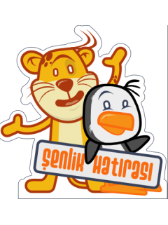

Pardus ekibi VI. Linux ve Özgür Yazılım Şenliğinde...
Linux Kullanıcıları Derneği tarafından bu yıl altıncısı düzenlenen Linux ve Özgür Yazılım Şenliği'nde Pardus ekibi de birçok konuda seminerler, etkinlikler ve sunumlarla yer alıyor.
VI. Linux ve Özgür Yazılım Şenliği, 2006 yılında olduğu gibi yine ODTÜ Kültür ve Kongre Merkezi'nde düzenleniyor. Şenlik ve Konferans'a katılım ücretsiz ve herkese açık.
Pardus geliştiricileri ve kullanıcıları tarafından yapılacak sunumların programı aşağıda. Tüm penguenlerle buluşmak dileğiyle...
| 11:15 | Pardus Projesi'nin Anatomisi | Ekin Meroğlu | Salon B |
| 13:30 | Python ve Web 2.0 | Gökmen Göksel | Salon B |
| 15:15 | Java Programcıları için Pardus | Mehmet D. Akın | Salon B |
| 9:30 | Pardus Çalıştayı: Türkiye 'Pardus' Diyor! | Çanakkale Onsekiz Mart Üniv. Petrol İş Sendikası | Salon D |
| 11:15 | Pardus Çalıştayı: Türkiye 'Pardus' Diyor! | Manisa İl Sağlık Müdürlüğü Neziroğlu Motorlu Araçlar | Salon D |
| 13:30 | Pardus Çalıştayı: Pardus'la Başardım | Doç. Dr. Server Acim | Salon D |
| 15:15 | Pardus Çalıştayı: Pardus'la Başardım | Affan Taner Ali Işıngör | Salon D |
| 9:30 | Nasıl Pardus Geliştiricisi Olunur? | A. Murat Eren | Salon B |
| 11:15 | Linux ve Pardus Deneyimlerim | Mehmet Sucu | Salon B |
| 13:30 | Pardus Teknolojileri | Faik Uygur | Salon C |
| 15:15 | Felis chaus'un öyküsü | DoğaBel | Salon B |
| 9:30 | Tembel Penguenlere Çekirdek Programlama | Faik Uygur | Salon D |
| 11:15 | Fuzz Testing: Yazılımlar Ne Kadar Güvenli? | İsmail Dönmez | Salon B |
| 13:30 | KDE4 Teknolojileri | Barış Metin İsmail Dönmez | Salon B |
| 15:15 | Linux Çekirdeği: Dünü, Bugünü ve Yarını | Ekin Meroğlu | Salon D |
Pardus Haberleri
-
28 Nisan 2007 // PC Magazine dergisi mayıs sayısında okurlarına Pardus 2007.1 Felis chaus "Çalışan CD" hediye ediyor. Pardus'u bilgisayarına kurmadan kullanmak veya denemek isteyenler için kaçırılmayacak bir fırsat...
-
20 Mart 2007 // Her ay yayınlanan Pardus bülteni, 3. sayısında son bir ayın haberleriyle okuyucu karşısına çıkıyor. Pardus bültenini Türkçe veya İngilizce okumak için tıklayın.

-
23 Kasım 2006 // Pardus'un tanıtımına katkıda bulunmak isteyenler için Pardus 2007 afiş ve düğmeleri yayınlandı. Sitenizde, blogunuzda yayınlamak için siz de hazır kodlarımızdan yararlanabilirsiniz.
Pardus Şehrinizde
-
3-6 Mayıs 2007 // ODTÜ Kültür ve Kongre Merkezi
VI. Linux ve Özgür Yazılım Şenliği (Pardus ekibi, geliştiricileri ve kullanıcıları) -
3 Mayıs 2007 // Işık Üniversitesi, 15:30
"Pardus Projesi" (Görkem Çetin)